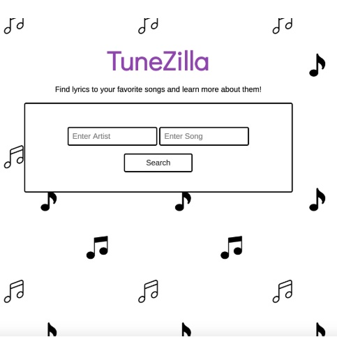

tunezilla

TuneZilla is a simplistic lyric-fetching web app that optionally
provides background and historical information about your favorite
songs.
Technologies Used: JavaScript, jQuery, HTML5, CSS3, GitPages, GitHub, Visual Studio Code